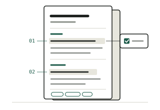
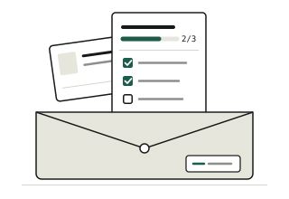

From school projects to your first job offer.
Turn your capstone, org work, and contests into a one-page resume. Then practice the interview questions Filipino employers actually ask.
Free. No account. Your data stays on your device.
Most resume tools assume you've already had a job.
Open a typical template and the first big box says Work Experience. If you're a student, that box stays empty, and the whole resume feels empty too.
Most of these tools were built for other countries. They also leave out what Filipino applicants deal with: whether to add a photo, which government documents to prepare, and questions like What is your expected salary?
And many charge you just to download your PDF.
What templates ask for
- Work experience
- Past job titles
- Years in the industry
What you actually have
- Capstone and class projects
- Org roles and events
- Contests, hackathons, quiz bees
- OJT, tutoring, volunteering, NSTP
Made for Filipino students starting out
-
OJT and internship applicants
Your school needs you placed by a deadline. Get a clean resume ready this week.
-
Fresh graduates
Applying for your first full-time job? Prepare your resume, your answers, and your documents in one go.
-
First and second years
Start early. See what employers look for, then join the orgs and projects that build it.
Three steps to your first offer
Do them in order, or jump to the one you need today.
-

1 Guide
Learn what goes on a fresh-grad resume, Philippine conventions, and how to turn school work into strong bullet points.
Read the resume guide -

2 Build
Fill in a simple form and watch your one-page resume take shape. Check it against a real job post, then save it as a PDF.
Open the resume builder -
3 Practice
Flip through common interview questions with tips and sample answers, and draft your own using the STAR method.
Start practicing
Got the offer? Prepare your pre-employment documents, many of them free under RA 11261.
Why not just use a global resume builder?
They're good tools. They just weren't made for a Filipino student's first application.
| What you need | OJT to Offer | Typical global tools |
|---|---|---|
| Works with no work experience | Yes: "No experience yet" mode | Experience section comes first |
| Philippine resume tips (photo, address, age) | Yes | Rarely covered |
| Interview practice in the same place | Yes, with Filipino interview questions | Usually a separate tool |
| Pre-employment documents and RA 11261 | Yes, with a saved checklist | Not covered |
| Free PDF download | Always free | Often paid or watermarked |
| Account needed | No account | Sign-up required |
Based on our review of 12 tools in November 2026, including Canva, Resume.io, Teal, Novoresume, and Kickresume. Sources are listed on the About page.
Your first resume can be ready today.
It takes about 20 minutes. Load the sample to see how it works.
Start building